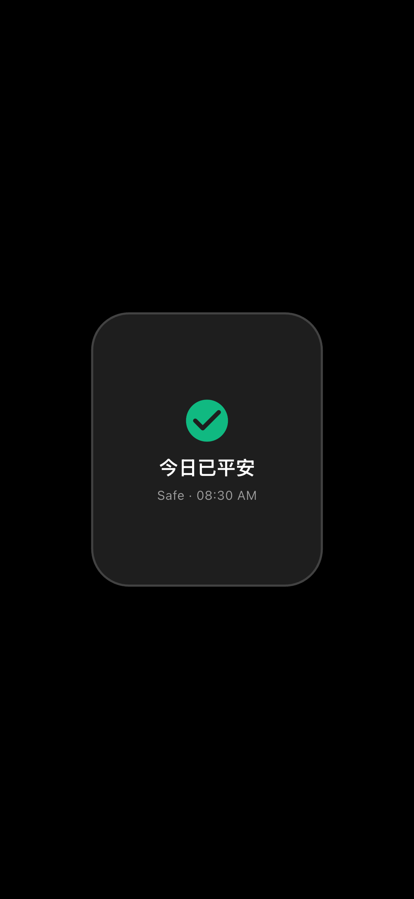
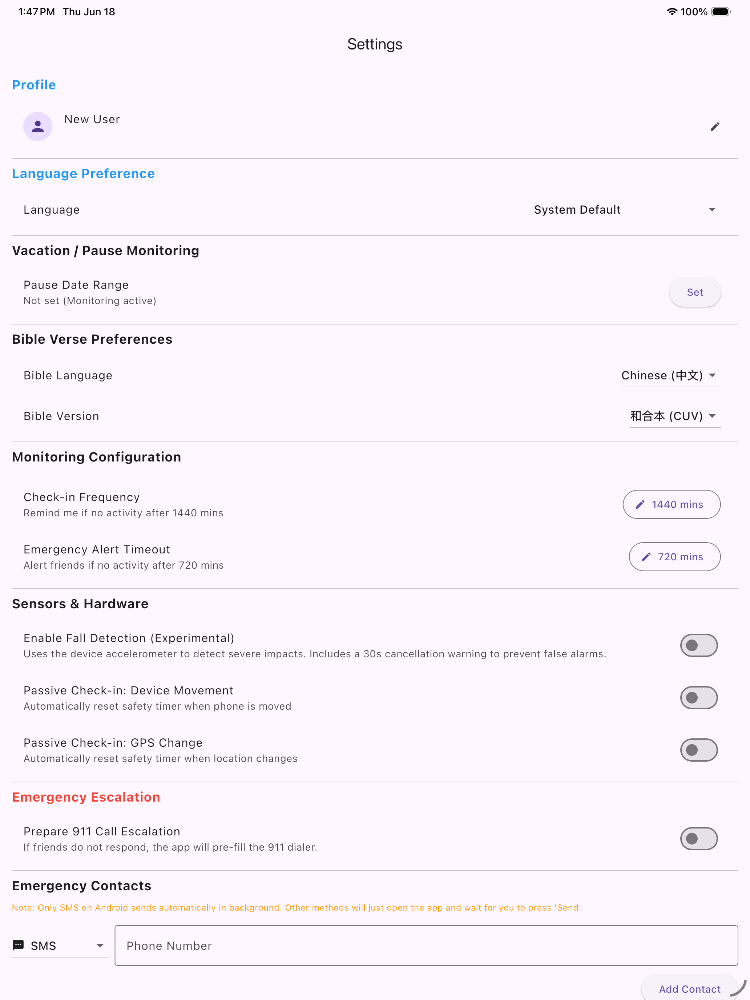
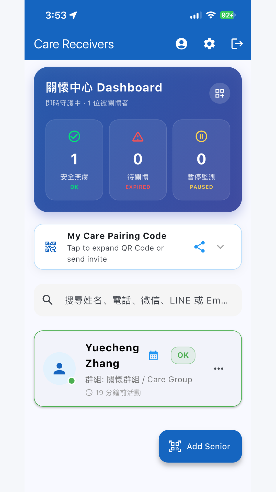

❤
PNCC 關懷 (dailyNotify)
以科技傳遞尊嚴：長輩安康有尊嚴 · 子女牽掛得安心
全方位技術架構分析、每一項功能設定與功能後果詳解、全彩圖文實機截圖與臨床長者照護實務指南。
涵蓋設計初心、工程抉擇、六大報平安觸發機制、雙向照護模式、設定詳解與異常應變處置手冊。
📱 蘋果 iOS & 安卓跨平台
⌚ Apple Watch 獨立手錶伴侶
🗣 Amazon Alexa 語音打卡金句
🌙 床頭護眼經文夜鐘 (Daydream)
🛡 跌倒感測與雙層安全計時器
🔒 零追蹤 · 零廣告 · 隱私守護
產品版本： v1.1.5 (Build 25) · 發布年份： 2026年11月
設計與架構師： ZigzagYC & PNCC 關懷核心開發團隊
App Store 應用代號： 6742517865 · App ID： com.zigzagyc.dailyNotify
化解當代高齡社會最揪心的矛盾：遠方子女時刻懸著一顆心、擔憂獨居父母的日常安危；而深具獨立尊嚴的長輩，卻極度排斥侵犯隱私的監視鏡頭或沉重繁瑣的科技負擔。
1.1 核心社會痛點
現代高齡化與少子化趨勢，造成無數獨居長者與在異地打拼的遠距子女。這衍生出深層心理磨擦：
- 子女無休止的焦慮牽掛：「媽媽今早起床了嗎？爸爸昨晚有沒有在浴室滑倒？萬一發生意外，要過多久才會被發現？」
- 長輩對隱私侵犯與繁瑣科技的抗拒：長輩渴望被尊重、保有自主隱私。在客廳臥室安裝攝影機讓長輩感覺像被囚禁與犯人般監控；每天例行公事般的電話詢問（「你有沒有吃藥？人還好嗎？」）容易被誤解為嘮叨或被視為老弱無能；傳統求救吊墜常被鎖在抽屜，因為戴在身上如同貼上「失能者」的標籤。
1.2 設計北極星指標：「被動與主動的尊嚴平衡」
我們的核心設計哲學是：報平安絕不應該是「被監控的負擔」，而是一場尊嚴、溫暖且毫不費力的晨間儀式，耗時不到 2 秒鐘。
PNCC 關懷讓長輩「根本無須學習新軟體」，而是融入日常生活起居中：早晨醒來摸一下床頭的電子時鐘、散步看一眼手錶、在被窩裡對智慧音箱說句話、讀一段每日金句。
支援 Apple Face ID / Google 一鍵登入與長輩、照護者、雙向模式動態轉換。
2.1 無密碼生物辨識登入

圖 2.1：跨平台生物辨識登入畫面 (Apple、Google 與家庭信箱)
- Sign in with Apple（蘋果用戶推薦）： 點擊黑色按鈕，透過 Face ID / 觸控 ID 一鍵登入，**完全不用記密碼**。
- Sign in with Google（安卓用戶推薦）： 點擊 Google 按鈕直接選擇手機既有帳號。
- 電子郵件註冊： 輸入信箱與 6 位數以上密碼建立專屬家庭帳號。
2.2 三大身分角色詳解

圖 2.2：身分切換介面 (長輩、照護者與雙向模式)
| 身分角色 |
適用對象與人因考量 |
介面特點與功能後果 |
| 長輩模式 (Senior) |
獨居或同住的高齡父母。追求極致簡潔與低認知負荷。 |
展示超大綠色「我很好」卡片、即時平安狀態、今日經文與床頭護眼時鐘。完全隱藏複雜管理選單。 |
| 照護者模式 (Caregiver) |
成年子女、親屬、社工與志工。 |
提供多位長輩儀表板。呈現各長輩顏色燈號、倒數計時器、最後活動時間戳記與一鍵撥號/簡訊。 |
| 雙向模式 (Dual Mode) |
三明治世代（自己需向遠方兒女報平安，同時看護老家父母）。 |
加入底部雙標籤導航欄。點擊長輩分頁為自己打卡，點擊照護者分頁即時看護老家父母。 |
隨時切換角色： 進入設定 (⚙️) → 滑至底部點擊 「切換身分模式」(⇄) → 點選卡片即刻生效，無須重新登入。
六大報平安觸發途徑，長者想怎麼報就怎麼報，完全不需改變生活作息。
3.1 長輩首頁人因設計

圖 3.1：長輩首頁整合式超大安全卡片與平安燈號
長輩首頁專注於單一無捲動視覺中心：
- 整合式巨型卡片： 平安狀態與「我很好」按鈕熔鑄為 48dp+ 醒目卡片，老花眼亦能看清。
- 500 毫秒自動退出： 按下後震動回饋並自動退回手機桌面，長輩絕不會被困在 App 中。
3.2 六大報平安觸發管道詳細說明


圖 3.2：Apple Watch 手錶伴侶 (左) 與 桌面小工具/鎖定畫面即時動態 (右)
| 觸發途徑 |
使用方式 |
運作原理與功能後果 |
| 1. 手機超大卡片一鍵打卡 |
打開軟體，點擊綠色卡片。 |
重置計時器一與二，寫入 Firestore，更新桌面小工具，觸覺震動並於 500ms 後自動縮小退出。 |
| 2. Apple Watch 手錶伴侶 |
抬腕看錶，點擊「我很好」。 |
透過 WatchConnectivity 發送加密封包給 iPhone；若 iPhone 不在身邊則手錶本地快取，連線後自動補傳。 |
| 3. Amazon Alexa 智慧語音 |
對音箱說：「Alexa，跟 Daily Notify 說我很好。」 |
Echo 音箱連線 AWS Lambda，驗證 6 位數憑證，重置雲端計時器，Alexa 以中文智宇女聲回讀今日金句。 |
| 4. 床頭護眼電子鐘 (Daydream) |
手機插上充電器，早晨醒來摸一下螢幕。 |
黑底護眼時鐘，觸摸螢幕任意位置退出時鐘並**自動完成今日打卡**！ |
| 5. 桌面小工具與即時動態 |
在手機桌面/鎖定畫面直接點擊綠色按鈕打卡。 |
WidgetKit / AppWidgetProvider 攔截點擊，本地即時變更為 Safe 並非同步上傳雲端。 |
| 6. 跌倒重力衝擊感測 |
被動防護。手機感測到重摔撞擊。 |
手機發出警報聲並倒數 30 秒，長者未按「我沒事」撤銷時，自動向家屬發送跌倒警報。 |
詳盡介紹設定畫面中的每一個開關、數值、計時器、滑桿及調整後的系統反應與功能後果。


圖 4.1：手機端設定選單 (左) 與 平板大螢幕詳細設定視圖 (右)
4.1 安全計時器與休假配置
| 設定項目 |
可選範圍 / 數值 |
詳細運作機制與功能後果 (Consequence) |
| 平安打卡週期 (計時器一) |
60 至 2880 分鐘
(預設：1440m = 24小時) |
機制： 正常平安安全窗倒數。
後果： 計時器一歸零後，首頁狀態從綠燈轉為黃燈預警，向長輩手機發送打卡提醒。若設為 0 則關閉所有安全監測與警報。 |
| 警報逾時時限 (計時器二) |
0 至 720 分鐘
(預設：60分鐘寬限，或0) |
機制： 計時器一到期後的寬限緩衝期。
後果： 計時器二歸零後，狀態翻轉為紅燈緊急警報，向所有已綁定的家屬發送高優先級警報推播與橫幅。若設為 0 則計時器一到期立即報警。 |
| 休假 / 暫停監護模式 |
日期範圍選擇器 (起訖日期) |
機制： 長輩出遊、返鄉或住院期間暫停監測。
後果： 暫停期間計時器凍結，不觸發黃燈與紅燈警報，家屬端顯示灰色「休假中」徽章。完全避免誤報干擾。 |
4.2 被動感測與自動報平安機制
| 設定項目 |
可選設定 |
詳細運作機制與功能後果 (Consequence) |
| 充電狀態變動自動報平安 |
開啟 / 關閉 (預設開啟) |
機制： 廣播接收器監聽插上或拔掉充電線動作。
後果： 長輩晚上睡前插上充電、或早晨拔掉充電線時，系統靜默視為一次有效活動並重置計時器！長輩完全不用開軟體。 |
| 解鎖螢幕自動報平安 |
開啟 / 關閉 (預設開啟) |
機制： 監聽系統螢幕解鎖 (ACTION_USER_PRESENT) 事件。
後果： 長輩只要解鎖手機看照片、讀簡訊或聽語音，系統自動確認長者平安並重置安全計時器。 |
| Apple 健康 / Google 健身同步 |
開啟 / 關閉 (預設關閉) |
機制： 讀取 HealthKit 或 Google Fit 步數與心率。
後果： 過去 1 小時內步數大於 100 步、或 Apple Watch 記錄到活動心率時，自動確認安全並更新最後活動時間。 |
| 跌倒撞擊靈敏度 |
高 (地毯軟地面)
標準 (木地板)
低 (堅硬瓷磚) |
機制： 設定加速度計重力衝擊閾值。
後果： 「高」在 1.8G 觸發，「標準」在 2.5G，「低」在 3.2G。偵測到撞擊後強制啟動 30 秒本機倒數取消窗，防止手機掉落地面造成誤報。 |
| 搖晃求助警報 |
開啟 / 關閉 (預設關閉) |
機制： 連續劇烈搖晃手機感測。
後果： 長輩突發心悸或遭受威脅時，用力搖晃設備 3 秒立即啟動 10 秒倒數，隨後發送求救警報並呼叫聯絡人。 |
4.3 地理圍欄與安全區域
| 設定項目 |
可選設定 |
詳細運作機制與功能後果 (Consequence) |
| 啟用安全區域 |
開啟 / 關閉 |
機制： 背景 GPS 圓形地理圍欄監測。
後果： 長輩處於設定的安全區域（如家中）時自動放寬或暫停計時；若長者離開指定區域，恢復監測或通知家屬（防走失重要功能）。 |
| 安全區坐標 |
地圖選點器 / 目前 GPS |
後果： 設定安全區域中心點（如長輩住家）。 |
| 安全區半徑 |
50m, 100m, 200m, 500m |
後果： 設定防護範圍半徑。200 公尺半徑足以涵蓋長輩住家、前後院與庭院周遭。 |
4.4 介面外觀、語言與照護者自訂
| 設定項目 |
可選設定 |
詳細運作機制與功能後果 (Consequence) |
| 軟體介面語言 |
繁體中文 / 簡體中文 / 英文 |
後果： 改變按鈕、選單與說明文字語言。與聖經譯本完全解耦獨立。 |
| 聖經譯本 |
和合本 (CUV)
英文 NIV
英文 KJV |
後果： 決定每日金句與離線閱讀器語言。長輩看中文聖經，海外子女用英文介面，互不衝突。 |
| 打卡後自動縮小退出 |
開啟 / 關閉 (預設開啟) |
後果： 開啟時點擊打卡 500ms 後自動返回手機桌面；關閉時保持留在長輩首頁。 |
| 照護者警報橫幅脈衝閃爍 |
開啟 / 關閉 (預設開啟) |
後果： 紅燈時橫幅持續呼吸閃爍以加強警示；關閉時呈現靜態紅底。 |
| 即時動態 (iOS 靈動島) |
平時顯示 / 逾時顯示開關 |
後果： 決定鎖定畫面是否在安全平時持續常駐倒數，或僅在黃燈/紅燈逾時時才彈出提示。 |
手把手教您如何配對長輩與子女，以及照護者在不同燈號時的標準應變處置標準流程。
5.1 三秒動態 AES QR Code 掃碼配對
- 長輩手機端： 開啟設定 → 點選 「我的照護者」，螢幕呈現專屬加密 QR Code。
- 子女手機端： 進入照護者儀表板 → 點擊右下角藍色圓形 「+」 號 → 點擊 「掃描 QR Code」。
- 對準掃描： 對準長輩螢幕掃描，長輩卡片立刻出現在子女儀表板上！多位兒女可重複掃描同一張二維碼組成關懷圈。
5.2 照護者儀表板功能與多長輩管理
圖 5.1：手機端照護者儀表板 (左) 與 平板多長輩看護網格 (右)
5.3 照護者面對五大即時狀態之處置指引 (SOP)
狀態一：綠燈 · 平安守護中 (Safe)
狀態解讀： 長輩在安全週期內打卡（如今天 08:30 AM 透過 Apple Watch）。
處置指引： 全家安心！無須採取任何打擾動作。可點擊快捷圖示發送溫馨祝福簡訊。
狀態二：黃燈 · 預警寬限期 (Warning / Overdue)
狀態解讀： 計時器一到期，進入計時器二之緩衝階段。長輩可能睡晚、洗澡或散步中。
處置指引： **切勿慌張**。發送一般簡訊或撥打親切問候電話：「媽媽早安，今天精神好嗎？」
狀態三：紅燈 · 逾時緊急警報 (Emergency Timeout)
狀態解讀： 雙層計時器皆耗盡，無任何裝置打卡。系統跳出紅色橫幅並發出警報推播。
處置指引：
- 直接點擊卡片上的「電話圖示」緊急呼叫長輩。
- 若無人接聽，撥打鄰居、社區管理室或居住在附近的親友協助查看。
- 若依舊失聯，依家庭約定立即前往住處或啟動安全訪視程序。
狀態四：紅燈 · 跌倒警報觸發 (Fall Detected)
狀態解讀： 長輩手機感應到劇烈撞擊，且 30 秒內未被手動取消。
處置指引： 第一時間撥通電話確認長輩神智與是否受傷；若無法取得聯繫，請立即請就近親友或撥打 119/911 前往住處馳援。
狀態五：灰燈 · 休假/暫停監護 (Vacation)
狀態解讀： 長輩正處於出遊或住院設定期內，所有警報均已暫停。
處置指引： 免除假警報干擾，安心陪伴長輩度假或休養。
結合心靈平安與安全守護，坦承當前技術邊界，展望無感雷達與電信直連的宏偉願景。
6.1 離線聖經章節閱讀器


圖 6.1：每日經文卡片 (左) 與 離線全章節聖經閱讀器 (右)
長輩每天醒來閱讀今日金句，點擊卡片可開啟 100% 離線的全文閱讀器。支援和合本、NIV、KJV 譯本自由切換，字體大小可無級調節，將安全守護昇華為心靈享受。
6.2 當前實作限制
- 遠距同步依賴網路： 本地打卡、聖經閱讀、跌倒感測與床頭夜鐘皆可 100% 離線運作，但向遠方子女儀表板同步仍需要長輩手機連上 Wi-Fi 或行動網路。
- 語音智慧音箱依賴硬體： Alexa 語音打卡需配合 Amazon Echo 設備或 Alexa App。
- 蘋果系統背景電源排程： iOS 在未開啟體能訓練模式下，背景感測器與常駐執行緒受蘋果電源管理調度約束。
6.3 未來演進願景 (未來 12-24 個月)
- 電信自動語音電話與簡訊回退 (PSTN Call Fallback)： 若家屬手機離線或未安裝 App，當紅燈警報觸發時，雲端伺服器在紅燈觸發時將自動外撥真實行動電話語音通知家屬。
- Matter / 60GHz 毫米波雷達無感偵測： 整合無鏡頭之毫米波雷達，被動感測長者下床走動與呼吸起伏，徹底實現「連螢幕都不用摸」的極致被動平安感知。
- AI 生物節律規律異常早期偵測： 機器學習演算法學習長輩起床打卡的生物節律；若長輩平時皆在 7:30 打卡，某日過 9:00 仍未動作，提前以溫和方式提醒。
- Apple Watch 獨立蜂巢網路雲同步： 支援 Apple Watch LTE 獨立直連 Firebase 雲端，外出散步免隨身帶 iPhone 即可實現全球即時通訊。